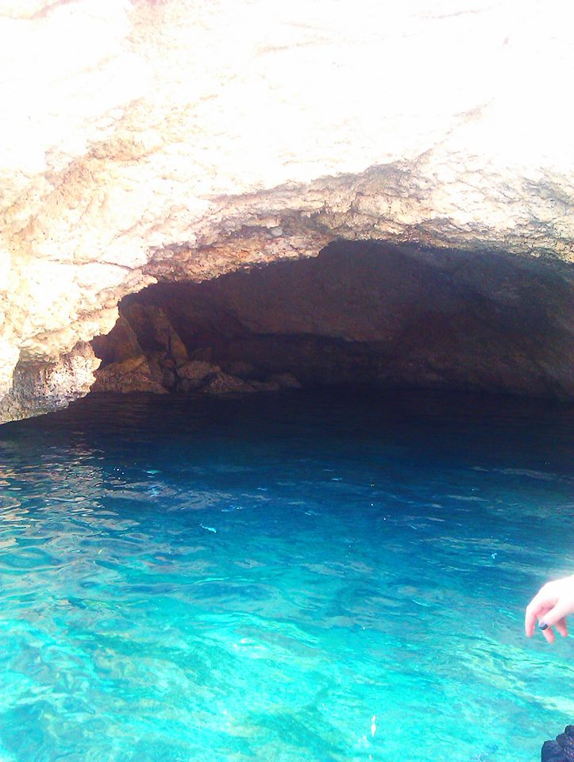

বাংলাদেশে আমার শেষবারের মতন শরতের মেঘহীন নীলাকাশ দেখাটা ছিল সেপ্টেম্বর / অক্টোবর ২০০২। সেই বছরে ডিসেম্বরে আমি স্কটল্যান্ডে চলে আসি নতুন সংসারে। এর পরে এ পর্যন্ত তিনবার দেশে গেলেও শরত কালে আর যাওয়া হয়নি। দেখা হয়নি সেই আকাশ, সেই কাশবন।
আমি থাকি স্কটল্যান্ডের অ্যাবারডিন শহরে। এখানে শরত হেমন্ত আলাদা নয়। দুইটা মিলেই শরত।এই দেশ শীত প্রধান দেশ তাই শরতের শুরুতেই উষ্ণ আবহাওয়া আশা করা যায়না।এখানকার প্রবাসীরা এতে অভ্যস্ত হয়ে গেলেও আমি এখনও নিজেকে এখানে মানাতে পারিনি।
এখানকার আবহাওয়ার একটা ব্যাপার আমার খুব ভালো লাগে, সামার টাইমে রাতের আকাশ পুরোপুরি অন্ধকার হয়না। দিনগুলি হয় দীর্ঘ ২০ ঘণ্টা আর রাতের আয়ু মাত্র ৪ ঘণ্টা!
শরতে রাতের চেয়ে দিন একটু দীর্ঘ হয়। ১২. ৩০ ঘণ্টার মতন। তাপমাত্রা থাকে ৯ºসে -১৩/১৪º পর্যন্ত। যদিও এই বছর সামার টাইম দীর্ঘ ঘোষণা করা হয়েছে। ২ সপ্তাহ আগে একদিন তাপমাত্রা ছিল ২৬ ডিগ্রি। যা নাকি গত ৩০ বছরে ঘটেনি। আকাশ সপ্তাহে প্রায় ২/৩ দিন মেঘাচ্ছন্ন থাকবেই। অটামের শেষের দিকে শুরু হবে মন খারাপ করা বৃষ্টি, যা মনকে নস্টালজিক করে তুলবে। তার সাথে থাকবে ঝড়ো হাওয়া। পাতা ঝরার দিনগুলিতে পাতাগুলোকে কোথায় উড়িয়ে নিয়ে যায়! গাছগুলো পড়ে থাকে নিঃস্ব কঙ্কালসার হয়ে। এ পাতা ঝরার দিন শুরু হওয়ার আগে পর্যন্ত শরত বৈচিত্র্যময় আর রঙিন লাগে।

শরত ভাবলেই চোখে ভেসে উঠে ধবধবে সাদা কাশফুল। এখানে খুব মিস করি। এখানে অটামের কোন বিশেষ ফুল ফোটেনা। সামারের ফুলগুলোই অটামের মাঝামাঝি রয়ে যায়। কিছু গোলাপ, হাইড্রেনজিয়া আর ফক্সগ্লাভ। তবে একটা কারণে অটামের জন্য আমি অপেক্ষা করতে থাকি,বাচ্চার স্কুল ছুটি হয় তখন।
এখানে স্কুল হলিডে বছরে ৪ বার । এপ্রিলে ইস্টার হলিডে , জুলাই আগস্ট সামার হলিডে, অক্টোবরে দুই সপ্তাহের স্কুল ছুটি আর ডিসেম্বরে ক্রিসমাসের ছুটি। এখানকার সবাই বেড়ানোর জন্য সামার হলিডে বেছে নিলেও আমরা যাই অক্টোবরে। গত শরতে গিয়েছিলাম স্পেনের কাছে ছোট্ট দ্বীপ আইবিজায়। এবারডিন থেকে প্লেনে সাড়ে তিন ঘন্টা লাগে আইবিজায় । ল্যান্ড করে চেক আউট করে বেরুতে বেরুতে সন্ধ্যা। হোটেলের বাসে চড়ে বসলাম। ভাবলাম রাতের আইবিজা দেখতে দেখতে যাব।
সকালের রোদ চোখের পাতা ছুঁতেই ঘুম ভাংল। মোবাইলে এ টেম্পারেচার দেখলাম ৩২º C। দেশে আসার আগে সমুদ্র দেখেছি টিভিতে, নাটক সিনেমায়। প্রতিবারই সত্যিকারের সমুদ্র দেখার আক্ষেপ হয়েছে ।হোটেল থেকে বিচে যেতে রাস্তা খুব ঢালু। রাস্তার দুই পাশে সারি সারি লেবু আর কমলা গাছ। গাছ ভর্তি কাঁচা পাকা লেবু আর কমলা। বিচে প্রচুর টুরিস্ট। জীবনে প্রথম সমুদ্রস্নান! সুইমিং গগলস পরে ডুব দিয়ে পানির নিচে তাকিয়ে দেখি অসংখ্য মাছ। টুরিস্টরা ব্রেড নিয়ে আসে এদের খাওয়ানোর জন্যে। ফিশিং নিষিদ্ধ। মাছগুলো মানুষের খুব কাছাকাছি চলে আসে। আমি হাত বাড়াতেই পালিয়ে গেল।
পরের দিন গেলাম "পাইরেটস কেইভ" এ। পাহাড়ের মাঝামাঝি এই কেইভ যেখানে শত শত বছর আগে জলদস্যুরা তাদের গুপ্তধন লুকিয়ে রাখত।গাড়িতে করে যাচ্ছি আর ইতালিয়ান গাইড চারপাশের বিবরণ দিয়ে যাচ্ছে। একটা ফরেস্ট দেখলাম যা নাকি বছর খানিক আগে দাবানলে শেষ হয়ে গিয়েছিল। সবুজের চিহ্ন মাত্র ছিল না, শুধু পুড়ে যাওয়া কালো কালো গাছের কংকাল। এত সুন্দরের মাঝে যা মন খারাপ করিয়ে দেয়।